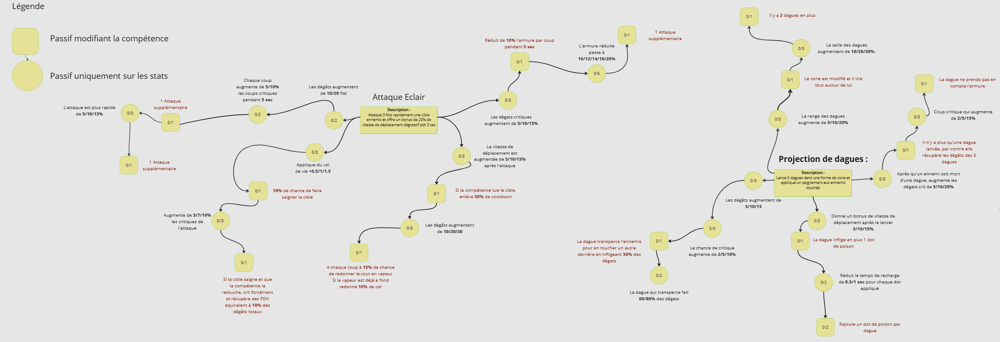
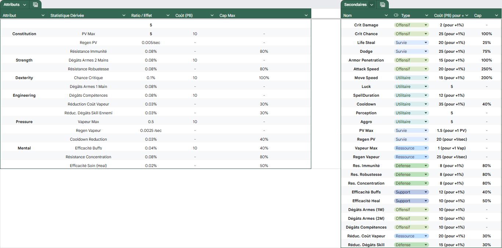
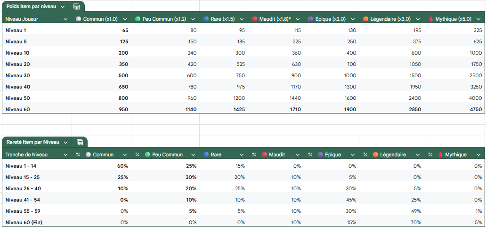
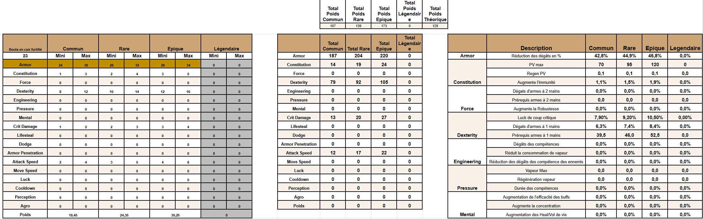
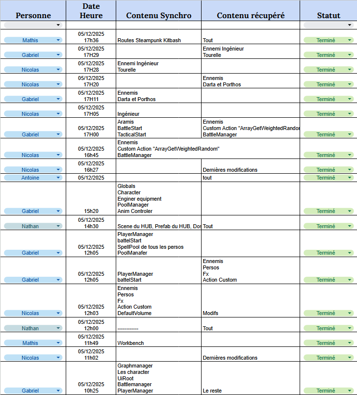

Role
GD & Tech Designer
ÉquipeTeam
11 People
Engine
Unity (C#)
Genre
Tactical RPG
Conception des CompétencesSkill Design & Progression
Pour garantir une profondeur stratégique, j'ai conçu des arbres de compétences complexes sur Miro. L'objectif était de permettre au joueur de créer des synergies uniques entre les différentes classes de Mousquetaires.
To ensure strategic depth, I designed complex skill trees using Miro. The goal was to allow players to create unique synergies between the different Musketeer classes.

Structure de progression des compétences actives (Niveaux 1 à 45) Active skills progression structure (Levels 1 to 45)

Arbre nodal des passifs et modificateurs de statistiques Nodal tree for passives and stat modifiers
System Design & AttributsSystem Design & Attributes
J'ai formalisé l'intégralité des règles mathématiques du jeu sur Excel. Cela inclut le calcul des attributs secondaires (Dégâts, Critique, Esquive) basés sur les attributs primaires (Force, Dextérité, etc.) ainsi que les coûts en points de compétence.
I formalized all the game's mathematical rules on Excel. This includes calculating secondary attributes (Damage, Crit, Dodge) based on primary attributes (Strength, Dexterity, etc.) as well as skill point costs.

Tableau de dérivation des statistiques et coûts d'évolution Stats derivation table and evolution costs
Équilibrage & LootBalancing & Loot Tables
Pour maintenir l'intérêt du joueur, j'ai établi des tables de butin précises. J'ai défini les taux de drop par niveau et calculé les plages de statistiques pour chaque rareté d'équipement (Commun à Légendaire) afin d'assurer une montée en puissance gratifiante.
To keep player interest high, I established precise Loot Tables. I defined drop rates per level and calculated stat ranges for each equipment rarity (Common to Legendary) to ensure a rewarding power curve.

Distribution des probabilités de drop selon le niveau du joueur Drop probability distribution based on player level

Matrice d'équilibrage des équipements (Exemple : Bottes en cuir) Equipment balancing matrix (Example: Leather Boots)
Production & Suivi TechniqueProduction & Tech Tracking
En tant que Technical Designer, j'ai également pris en charge le suivi de la production. J'utilise des outils de tracking pour monitorer l'avancement des tâches et un fichier de suivi rigoureux pour la chasse aux bugs (QA), assurant la stabilité des builds.
As a Technical Designer, I also handled production tracking. I use tracking tools to monitor task progress and a rigorous log for bug hunting (QA), ensuring build stability.

Journal de suivi de version et synchronisation des tâches Version control log and task synchronization

Matrice de suivi QA et priorisation des bugs QA tracking matrix and bug prioritization